Хумус, табуле, горячий фалафель и курица на шпажках, анисовая водка, которая белеет от воды, и песни Фейруз. Рецепты, план по часам, игры и истории для стола. Укажите число гостей, и список покупок соберётся сам.
Представьте летний вечер на террасе в горах над Бейрутом. Внизу огни города и тёмное море. Стол заставлен маленькими тарелками: белый хумус с золотой лужицей масла, ярко-зелёный табуле, дымный баба гануш, горка горячего фалафеля. Никто не ждёт, пока ему положат: все тянутся к общим тарелкам, отрывают кусочки лепёшки и зачерпывают то одно, то другое. В стаканах арак белеет от воды, из колонки поёт Фейруз. Ужин длится четыре часа, и никто не смотрит на часы.
Такой вечер мы и устроим у вас дома.
Что такое меззе
Меззе - это не закуски перед «настоящей» едой, а и есть главная еда. Много маленьких блюд, которые ставят на стол все сразу. Слово пришло через турецкий из персидского, где «мазе» значит «вкус». Ливанцы считают, что хороший стол меззе должен быть таким плотным, чтобы не было видно скатерти.
Для хозяина это лучший формат на свете. Почти всё готовится накануне и подаётся холодным или чуть тёплым. При гостях вы только жарите фалафель, печёте лепёшки и ставите курицу в духовку. А половина меню вегетарианская сама по себе, так что гости, которые не едят мясо, не останутся голодными.
Маленькая страна на берегу
Ливан в четыре раза меньше Московской области: его площадь всего 10 452 квадратных километра. Но в этой маленькой стране есть море и горы со снегом, древние финикийские города, римские храмы и 18 официально признанных религиозных общин. Ливанская кухня собрала понемногу от всех, кто здесь жил и торговал: финикийцев, римлян, арабов, турок и французов.
Как устроен вечер
Меззе. Гости приходят, на столе уже хумус, баба гануш, табуле, маслины, овощи и лепёшки, в кувшинах лимонад и айран. Пока все собираются, играем в «Угадай специю».
Горячее меззе. Вы выносите фалафель с соусом тахини и горячие манакиш из духовки. Рассказываем истории из шпаргалки, наливаем анисовую водку.
Горячее. Шиш-таук с чесночным соусом и свежий фаттуш. Между горячим и сладким игра «Арабское слово или нет?» и викторина.
Сладкое и кофе. Мухаллабия с фисташками, кофе с кардамоном. Под конец гадаем на кофейной гуще и, если есть силы, танцуем дабке.
Меню
Меззе: хумус, баба гануш, табуле, фалафель с соусом тахини, манакиш с заатаром и с сыром. Горячее: шиш-таук с чесночным соусом, салат фаттуш. Сладкое: мухаллабия с фисташками и мёдом. Напитки: ливанское (или грузинское и армянское) белое и красное вино, узо или ракы вместо ливанского арака, лимонад с мятой, айран, кофе с кардамоном.
Список покупок
Укажите, сколько будет гостей, и список пересчитается сам. Отмечайте купленное галочкой прямо в магазине.
Что купить
Все блюда считаются на всех гостей вместе с детьми, специи (зира, кориандр, паприка, душистый перец, корица) и соль из обычного шкафчика в список не входят. Вино: одна бутылка белого на троих пьющих и одна красного на четверых. Если тесто своё, вместо готового теста в списке появятся мука и дрожжи. Если кто-то из взрослых не пьёт, добавится гранатовый сок. Для детей добавляются лимоны на лимонад. Отмеченные покупки запоминаются в этом браузере.
Время указано полное, вместе с замачиванием, маринованием и охлаждением. Почти всё делается накануне.
Если за столом дети
Ливанский стол очень семейный: в Ливане дети сидят за общим столом до самого конца вечера. Почти всё меню им подходит, нужно только сделать пару вещей помягче.
Что подходит детям
Хумус с лепёшкой - почти все дети любят его с первого раза. Отложите детям отдельную тарелку без паприки и сумаха.
Фалафель - для детей сделайте шарики поменьше, размером с черешню, и подавайте с кетчупом или йогуртом вместо соуса тахини.
Манакиш с сыром - главное детское блюдо вечера. Пусть дети сами раскатают тесто, сделают пальцами ямки и посыплют сыром.
Шиш-таук - подходит без изменений, только снимите курицу со шпажек для маленьких детей. Чесночный соус детям лучше заменить обычным йогуртом.
Табуле и фаттуш - по вкусу ребёнка. Многие дети не любят много зелени: дайте им огурцы, помидоры и хрустящие кусочки лепёшки из фаттуша отдельно.
Мухаллабия - вместо мёда и цветочной воды положите сверху ложку варенья. Фисташки маленьким детям не давайте.
Баба гануш обычно детям не нравится из-за дымного вкуса, не настаивайте.
Напиток. Лимонад с мятой в таких же высоких стаканах, как у взрослых. Айран многие дети тоже любят, если сделать его без соли и добавить ложку мёда.
Чем занять детей
Повара манакиша. Раскатать тесто, сделать ямки, посыпать сыром. Лучше всего за час до гостей.
«Угадай специю». Детям очень нравится нюхать баночки с закрытыми глазами. Для них оставьте самые понятные: корицу, мяту, цветочную воду и заатар.
Раскраска «Ливанский кедр». Нарисуйте на листе контур большого дерева (или распечатайте флаг Ливана без цвета) и дайте раскрасить. Расскажите, что это дерево нарисовано на флаге целой страны.
Финикийский алфавит. Покажите детям, что буква «А» у финикийцев была похожа на голову быка, а «О» - на глаз. Пусть нарисуют свои имена «по-финикийски»: придумают для каждой буквы картинку.
Дабке. Дети с удовольствием топают в линию, держась за руки. Включите музыку в конце вечера и позовите их первыми.
Безопасность. - Масло для фалафеля очень горячее. Детей во время жарки на кухню не пускайте, а сотейник ставьте на дальнюю конфорку. - Деревянные шпажки острые: для маленьких детей снимите курицу заранее. - Орехи (фисташки) и целые маслины с косточками держите подальше от детей младше 5 лет. - Духовка при 250 °C: противни с манакишем вынимает только взрослый.
В списке покупок внизу написано, сколько продуктов добавить на детей.
Тайминг и список покупок
Расчёт на 6 взрослых, гости приходят в 19:00. Если время другое, сдвиньте всё на ту же разницу.
Стол меззе почти целиком готовится накануне: хумус, баба гануш, соусы, маринад и десерт ждут в холодильнике. В день вечеринки вы режете зелень, жарите фалафель и печёте лепёшки, а при гостях только ставите курицу в духовку и варите кофе.
Накануне
Когда
Что делать
Сколько времени
утром
Замочить сухой нут для фалафеля в большой миске холодной воды. Если дома жарко, в холодильник
5 мин
днём
Купить продукты по списку ниже. Тесто для манакиша, если замороженное, переложить в холодильник
-
17:00
Духовку на 230 °C. Баклажаны в духовку на 50 минут, переворачивать каждые 15 минут
5 мин
17:05
Мухаллабия: сварить, разлить по стаканчикам, накрыть плёнкой
20 мин
17:30
Хумус: проварить нут из банки, взбить с тахини, в контейнер и в холодильник
25 мин
17:55
Мухаллабию убрать в холодильник. Баклажаны вынуть, накрыть тарелкой, остывать
5 мин
18:00
Маринад, курицу нарезать и замариновать, в холодильник на ночь
15 мин
18:15
Баба гануш: выбрать мякоть, слить сок, размять с тахини, в холодильник
20 мин
18:35
Соусы: тахини для фалафеля и чесночный для курицы. Заправка для фаттуша в банке
15 мин
18:50
Сироп для лимонада: сварить с цедрой, бросить мяту, остудить, в холодильник
10 мин
20:00
Фарш для фалафеля: обсушить нут, измельчить с зеленью, специи, в холодильник (без соды)
20 мин
вечером
Распечатать карточки, насыпать специи для игры в баночки, белое вино и воду в холодильник
по настроению
Всего накануне около 2,5 часа работы на кухне. Почти всё время вы заняты чем-то одним, пока другое запекается или остывает.
День вечеринки (гости в 19:00)
Когда
Что делать
Сколько времени
14:00
Замочить деревянные шпажки на 30 минут. Нанизать курицу, накрыть плёнкой, в холодильник
25 мин
15:00
Зелень: вымыть и высушить петрушку и мяту для табуле и фаттуша
20 мин
15:30
Табуле: нарезать зелень и помидоры, хранить отдельно под влажным полотенцем в холодильнике
25 мин
16:00
Духовку на 200 °C. Лепёшки для фаттуша подсушить (10 мин). Нарезать овощи для фаттуша, в холодильник
25 мин
16:30
Фалафель: вмешать соду, сформовать шарики, обжарить партиями (или запечь в духовке)
40 мин
17:15
Накрыть стол. Достать хумус и баба гануш из холодильника. Поставить маслины, огурцы, редис
30 мин
17:45
Лимонад собрать в кувшине (лёд потом). Замочить булгур в лимонном соке
10 мин
18:00
Духовку на 250 °C с противнем внутри. Тесто для манакиша разделить, раскатать, смазать заатаром и посыпать сыром
25 мин
18:25
Табуле смешать и заправить. Хумус и баба гануш украсить маслом и гранатом. Айран взбить
10 мин
18:35
Манакиш: первый противень (8 мин), потом второй
20 мин
18:55
Лёд и мята в лимонад. Включить музыку
3 мин
19:00
Гости пришли. Холодное меззе на столе, лимонад и айран, «Угадай специю»
-
19:20
Духовку на 180 °C, прогреть фалафель 8 минут
3 мин
19:30
Фалафель с соусом тахини на стол, нарезанные манакиш. Налить узо или ракы или белое
Горячее на стол: шиш-таук на лепёшках, чесночный соус, фаттуш. Красное вино
-
21:15
Игры «Арабское слово или нет?» и «Правда или миф?»
30 мин
21:45
Украсить мухаллабию. Сварить кофе с кардамоном в два захода
15 мин
22:00
Мухаллабия и кофе. Гадание на кофейной гуще, дабке
-
При гостях вы встаёте из-за стола четыре раза, каждый на пару минут: прогреть фалафель, поставить курицу, перевернуть её и вынуть, а в конце сварить кофе.
Список покупок
Овощи, фрукты, зелень
Баклажаны - 3 крупных (около 1,2 кг)
Петрушка листовая - 6 пучков (4 на табуле, 1 на фалафель, 1 на фаттуш и украшение)
Мята свежая - 3 пучка (табуле, фаттуш, лимонад)
Кинза - 1 пучок (для фалафеля)
Лук зелёный - 1 пучок
Лук репчатый - 2 шт. (фалафель и шпажки)
Чеснок - 2 головки (нужно около 16 зубчиков; для настоящего тума ещё 1 головка)
Помидоры крепкие - 8-9 шт. (около 1 кг: 4 на табуле, 3 на фаттуш, 1-2 к манакишу)
6-8 одинаковых маленьких баночек или пиал для игры «Угадай специю»
Плотная бумага для печати карточек
Если за столом дети
Добавьте на каждых 2 детей: - Тесто - ещё 125 г и сулугуни - ещё 60 г (2 дополнительных манакиша с сыром) - Куриное филе - ещё 200 г - Лимоны - ещё 2 шт. и мята - ещё 0,5 пучка (на 1 л лимонада)
Вино и арак считайте только на взрослых. Подробнее в разделе Если за столом дети.
Рецепты
Меззе
Хумус
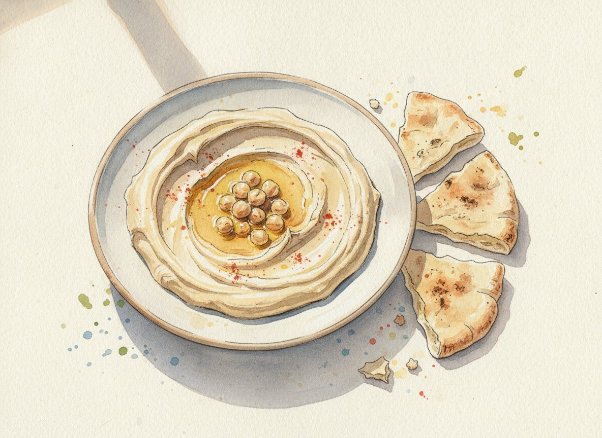
Активно
20 мин
Всего
30 мин (из нута в банке) или 14 ч (из сухого нута с замачиванием)
Порции
6 (около 700 г)
Духовка
не используется
Главная тарелка ливанского стола и первое, к чему тянутся гости. Нежное пюре из нута с кунжутной пастой тахини, лимоном и чесноком. Едят его не ложкой, а кусочком лепёшки: отрывают, зачерпывают и сразу в рот. Наш рецепт рассчитан на нут из банки, так быстрее, а вариант из сухого нута написан в конце.
История
Слово «хумус» по-арабски значит просто «нут». Полное название блюда - «хуммус би тахина», то есть «нут с тахини». Самый старый известный рецепт похожего пюре записан в XIII веке в кулинарной книге из Алеппо (сейчас это Сирия): там нут растирали с лимоном, кунжутом и оливковым маслом, но ещё без чеснока.
Чьё это блюдо, ливанское, сирийское, палестинское или израильское, спорят до сих пор. В 2010 году спор дошёл до Книги рекордов Гиннесса: около 300 ливанских поваров приготовили под Бейрутом 10 452 кг хумуса, больше десяти тонн. Это до сих пор считается рекордом.
Ингредиенты
нут консервированный (по 400 г, около 480 г нута без жидкости)2 банки
тахини (кунжутная паста, около 6 ст. л.)120 г
лимон (нужно 60-70 мл сока)1-2 шт
чеснок1-2 зубчика
вода со льдом (или жидкость из банки с нутом)80-100 мл
соль (без горки, по вкусу)1 ч. л.
зира (кумин) молотая (по желанию)0,5 ч. л.
Для подачи
оливковое масло Extra Virgin2-3 ст. л.
паприка сладкая или сумах1 щепотка
несколько горошин нута, отложенных из банки
петрушка2-3 веточки
Шаги
1. Прогреть нут · 10 мин
Слейте жидкость из банок через дуршлаг, но 100 мл отлейте в чашку: она пригодится. Нут промойте холодной водой. Отложите 1 столовую ложку целых горошин для украшения.
Переложите нут в кастрюлю, залейте свежей водой и варите 8-10 минут после закипания, пока горошины не станут совсем мягкими и не начнут лопаться.
2. Взбить тахини с лимоном · 3 мин
Пока варится нут, выжмите сок из лимона и процедите от косточек. Чеснок очистите. В чашу блендера положите тахини, лимонный сок, чеснок и соль. Взбейте 1 минуту: паста сначала загустеет и станет похожа на мокрый песок, потом посветлеет. Добавьте 2 столовые ложки ледяной воды и взбейте ещё, пока не станет кремовой.
3. Взбить нут · 5 мин
Слейте горячий нут, дайте ему постоять в дуршлаге пару минут и добавьте в блендер к тахини. Взбивайте 3-4 минуты, понемногу подливая ледяную воду, пока хумус не станет гладким и пышным, как густая сметана. Добавьте зиру, если любите.
Попробуйте. Если не хватает кислоты, добавьте лимонного сока, если пресно - соли. Помните, что остывший хумус загустеет.
4. Выложить красиво · 3 мин
Выложите хумус на широкую плоскую тарелку. Тыльной стороной ложки сделайте по кругу углубление-бороздку. Налейте в бороздку оливковое масло, в центр положите целые горошины нута, посыпьте паприкой или сумахом и положите веточку петрушки.
Практический блок
Заранее. Хумус можно сделать накануне. Храните в контейнере с крышкой в холодильнике до 3 дней. Перед подачей достаньте за 30-40 минут: холодный хумус кажется пресным. Если загустел, вмешайте ложку тёплой воды. Масло и украшения добавляйте только перед подачей.
С чем подавать. Ливанские лепёшки (в магазинах их обычно продают как «пита» или «арабский хлеб»), свежие огурцы, морковь и редис брусочками, маслины.
Из сухого нута. Возьмите 200 г сухого нута. Залейте холодной водой (в 3 раза больше нута) с 1 ч. л. пищевой соды и оставьте на ночь, 12 часов. Слейте воду, промойте, залейте свежей и варите 1-1,5 часа до очень мягкого состояния. Дальше как в рецепте, с шага 2. Вкус получается чуть ярче, чем у нута из банки.
Замены. - Нет тахини. Замените её на 100 г очищенного кунжута: обжарьте на сухой сковороде до золотистого цвета, остудите и смелите в блендере с 3 ст. л. растительного масла до пасты. Получится похоже, но менее гладко. - Острый хумус. Добавьте щепотку молотого перца чили или чайную ложку пасты харисса.
Сколько нужно. На столе меззе много блюд, хумуса уходит около 100-120 г на человека.
Аллергены. Кунжут (тахини), нут (бобовые).
Меззе
Баба гануш
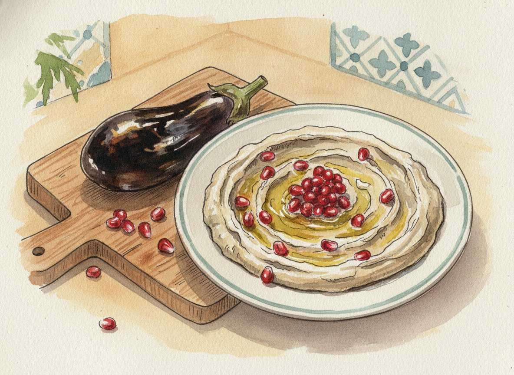
Активно
20 мин
Всего
1 ч 30 мин (с запеканием и остыванием)
Порции
6 (около 600 г)
Духовка
230 °C
Вторая «паста» ливанского стола, младшая сестра хумуса. Баклажаны запекают до тех пор, пока кожица не почернеет, а мякоть не станет совсем мягкой. Потом мякоть разминают вилкой с тахини, лимоном и чесноком. Главное в этом блюде - лёгкий дымный вкус: в Ливане баклажаны обжигают на углях, а мы добиваемся похожего вкуса в жаркой духовке.
История
Название по-арабски звучит как «баба гануш» и обычно переводится как «избалованный папа». Откуда оно взялось, никто точно не знает. Самая известная легенда рассказывает, что дочь приготовила это нежное пюре для своего беззубого старого отца. Документов об этом, конечно, нет, но легенда живёт в каждом ливанском доме.
В Ливане это блюдо иногда называют «мутаббаль», а в соседних странах «мутаббаль» и «баба гануш» - это два разных блюда: с тахини и с овощами без тахини. У нас вариант с тахини, как его чаще всего подают в Бейруте.
Ингредиенты
баклажаны крупные (около 1,2 кг)3 шт
тахини (около 60 г)3 ст. л.
лимон (нужно 3-4 ст. л. сока)1 шт
чеснок1 зубчик
соль (по вкусу)0,5 ч. л.
Для подачи
оливковое масло Extra Virgin2 ст. л.
зёрна граната (по желанию)2 ст. л.
петрушка или мята2-3 веточки
Шаги
1. Запечь баклажаны · 50 мин (без вашего участия)
Разогрейте духовку до 230 °C. Баклажаны вымойте и наколите вилкой в нескольких местах, чтобы они не лопнули. Положите целиком на противень с фольгой и запекайте 45-50 минут, переворачивая каждые 15 минут. Готовые баклажаны сморщиваются, кожица темнеет, а мякоть при нажатии ложкой проминается до самого дна.
2. Остудить и стечь · 20 мин
Переложите горячие баклажаны в миску и накройте тарелкой на 10 минут: от пара кожица легче отойдёт. Разрежьте вдоль и ложкой выберите мякоть, кожицу выбросьте. Мякоть положите в сито или дуршлаг над миской и оставьте на 10 минут, чтобы ушла горьковатая жидкость.
3. Размять и заправить · 5 мин
Переложите мякоть на доску и порубите ножом, а потом разомните вилкой в миске. Блендер здесь не нужен: в настоящем баба гануше чувствуются волокна баклажана. Чеснок натрите на мелкой тёрке или выдавите через пресс. Добавьте к баклажанам тахини, лимонный сок, чеснок и соль, перемешайте. Попробуйте и доведите лимоном и солью до вкуса.
4. Подать · 2 мин
Выложите на тарелку, сделайте ложкой волны, полейте оливковым маслом и посыпьте зёрнами граната и рубленой зеленью.
Практический блок
Заранее. Баба гануш можно сделать накануне, в холодильнике под крышкой он хранится 2 дня. Достаньте за 30 минут до подачи. Масло и гранат добавляйте перед тем, как ставить на стол.
Как выбрать баклажаны. Тяжёлые для своего размера, с гладкой блестящей кожицей и зелёным, а не сухим хвостиком. Мягкие и морщинистые в магазине уже не годятся.
Замены. - Нет тахини. Замените 3 ложками густого греческого йогурта. Получится другой, но тоже очень вкусный вариант.
Аллергены. Кунжут (тахини). Если вместо тахини взять йогурт - молочное.
Меззе
Табуле
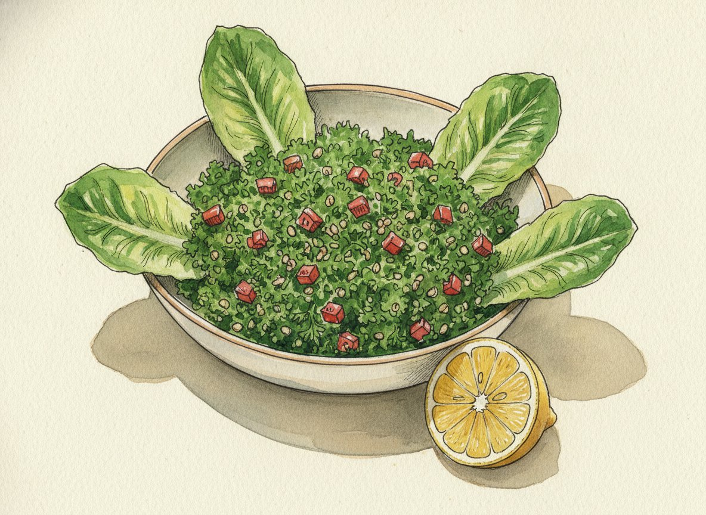
Активно
40 мин
Всего
1 ч (с замачиванием булгура)
Порции
6 (около 800 г)
Духовка
не используется
Самый ливанский салат и проверка на честность: в настоящем табуле много зелени и совсем немного крупы. Ярко-зелёная горка петрушки с мятой, помидорами, булгуром и лимоном. Если в вашем табуле больше крупы, чем зелени, ливанец вежливо скажет, что это «европейский вариант».
История
Табуле пришёл с гор Ливана и Сирии. Весной, когда в горах поднималась свежая зелень, его ели почти каждый день. Считается, что слово происходит от арабского «таабил», «приправы».
В Ливане у табуле есть свой праздник. С 2001 года в первую субботу июля отмечают Национальный день табуле: в городах и деревнях вместе режут зелень и готовят огромные миски салата.
Ингредиенты
петрушка листовая (около 200 г, лучше плоская, не кудрявая)4 пучка
мята свежая (около 30 г)1 пучок
помидоры крепкие (около 400 г)4 шт
лук зелёный (перья)3-4 шт
булгур мелкий (около 3 ст. л.)50 г
лимон (нужно 80-100 мл сока)2 шт
оливковое масло Extra Virgin80 мл
соль (по вкусу)1 ч. л.
душистый перец молотый (или чёрный)0,5 ч. л.
Для подачи (по-ливански)
листья салата ромэн или молодой белокочанной капусты, чтобы зачерпывать ими табуле
Шаги
1. Вымыть и высушить зелень · 15 мин
Отрежьте у петрушки толстые нижние стебли (верхние тонкие оставьте). Опустите зелень в большую миску с холодной водой, поболтайте и выньте руками: песок останется на дне. Повторите 2 раза со свежей водой. Так же вымойте мяту.
Высушите зелень полностью: в сушилке для зелени или раскатайте на чистом полотенце, сверните рулетом и оставьте на 15-20 минут.
2. Замочить булгур · 15 мин (без вашего участия)
Промойте булгур в сите, переложите в маленькую миску и залейте соком 1 лимона. Он впитает сок и станет мягким, варить его не надо. Если используете крупный булгур, залейте его на 15 минут кипятком, а потом откиньте на сито и отожмите.
3. Нарезать · 20 мин
Это главный шаг. Соберите петрушку в плотный пучок и режьте острым ножом очень тонко, как можно мельче, но одним движением, не «рубите» туда-сюда. Мяту нарежьте так же, только листья, без стеблей. Зелёный лук нарежьте тонкими колечками.
Помидоры разрежьте пополам, ложкой выньте семена с соком (они разбавят салат) и нарежьте мякоть мелким кубиком, 5 мм.
4. Смешать перед подачей · 3 мин
В большой миске соедините зелень, помидоры, лук и булгур. Добавьте сок второго лимона, оливковое масло, соль и перец. Перемешайте руками или двумя ложками. Попробуйте: табуле должен быть заметно кислым и свежим. Добавьте лимон, если нужно.
Практический блок
Заранее. Зелень можно вымыть, высушить и нарезать за 2-3 часа до гостей и держать в холодильнике в миске под влажным полотенцем, отдельно от помидоров. Смешивать и заправлять - не раньше чем за 30 минут до подачи.
Подача по-ливански. Выложите табуле горкой на блюдо, а по краям воткните листья ромэна или молодой капусты. Ими зачерпывают салат вместо вилки.
Замены. - Без глютена. Вместо булгура возьмите 50 г киноа: сварите 12 минут, остудите. - Нет мяты. Без неё можно, но вкус будет проще. Добавьте немного сушёной мяты, 0,5 ч. л.
Аллергены. Глютен (булгур - это пшеница).
Меззе
Фалафель с соусом тахини
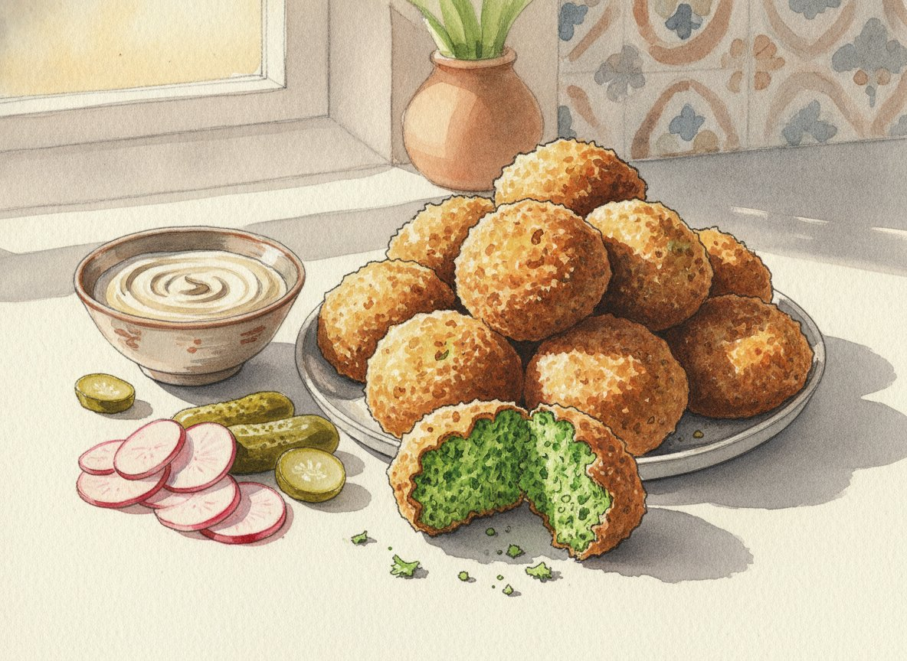
Активно
50 мин
Всего
13 ч (с замачиванием нута на ночь)
Порции
6 (около 30 шариков)
Духовка
100 °C, чтобы держать горячими (или 210 °C, если запекаете)
Хрустящие снаружи и ярко-зелёные внутри шарики из нута с зеленью и специями. В Бейруте их продают на каждом углу, завёрнутыми в лепёшку. У нас они стоят на столе горкой рядом с миской соуса тахини: каждый берёт шарик, макает и ест. Самое важное в этом рецепте: нут берут сухой, замоченный, а не варёный и не из банки.
История
Откуда фалафель родом, точно не знает никто. Чаще всего говорят, что его придумали в Египте христиане-копты: во время долгих постов им нельзя было есть мясо, и они делали сытные шарики из бобов. В Египте фалафель до сих пор делают из бобов фава, а в Ливане и Сирии из нута.
В Ливане фалафель - уличная еда, быстрый обед. Его заворачивают в тонкую лепёшку с помидорами, солёными огурцами, редисом, мятой и обильно поливают соусом тахини.
Ингредиенты
нут сухой (не консервированный!)250 г
лук репчатый небольшой1 шт
чеснок4 зубчика
петрушка (около 50 г)1 пучок
кинза (около 50 г)1 пучок
зира (кумин) молотая2 ч. л.
кориандр молотый2 ч. л.
соль1,5 ч. л.
чёрный перец молотый0,5 ч. л.
пищевая сода0,5 ч. л.
кунжут (по желанию)2 ст. л.
масло растительное без запаха для жарки (подсолнечное)700 мл
Соус тахини (таратор)
тахини100 г
лимон (нужно 50 мл сока)1 шт
чеснок1 зубчик
холодная вода80-100 мл
соль0,5 ч. л.
Шаги
1. Замочить нут · 12 ч (без вашего участия)
Накануне утром или вечером промойте нут, переложите в большую миску и залейте холодной водой, в 3-4 раза больше нута: он увеличится в 2,5 раза. Оставьте на 12-24 часа. Если в квартире жарко, уберите миску в холодильник.
2. Сделать фарш · 10 мин
Слейте воду и хорошо обсушите нут на полотенце. Лук и чеснок очистите и порежьте крупно, у зелени отрежьте толстые стебли.
Положите в чашу измельчителя нут, лук, чеснок и зелень. Измельчайте импульсами, останавливаясь и счищая массу со стенок лопаткой, пока не получится зелёная крупинчатая масса, похожая на влажный песок. Она не должна превратиться в гладкое пюре. Если чаша маленькая, делайте в два захода. Можно прокрутить всё дважды через мясорубку с мелкой решёткой.
Переложите в миску, добавьте зиру, кориандр, соль и перец. Перемешайте, накройте и уберите в холодильник минимум на 30 минут, можно до следующего дня.
3. Сделать соус тахини · 5 мин
Перемешайте тахини в банке. В миске смешайте тахини, лимонный сок, натёртый чеснок и соль. Сначала паста резко загустеет, это нормально. Подливайте холодную воду по ложке, всё время размешивая вилкой или венчиком, пока соус не станет гладким и густым, как жидкая сметана. Уберите в холодильник.
4. Сформовать шарики · 15 мин
Прямо перед жаркой вмешайте в фарш соду и кунжут. Мокрыми руками или двумя столовыми ложками сформуйте шарики размером с грецкий орех (около 3 см) и чуть приплюсните. Выкладывайте на доску или тарелку.
5. Обжарить · 20 мин
Налейте масло в сотейник слоем 4-5 см и разогрейте до 175-180 °C. Без термометра проверьте так: бросьте в масло крошку фарша, она должна сразу зашипеть и всплыть, но не чернеть.
Опускайте шарики по 6-8 штук, чтобы не было тесно. Жарьте 3-4 минуты, переворачивая шумовкой, до тёмно-золотистого цвета. Выкладывайте на бумажное полотенце.
Практический блок
Заранее. Фарш без соды держится в холодильнике 1 сутки. Готовые шарики можно пожарить за час-два до гостей и перед подачей прогреть в духовке 7-8 минут при 180 °C: они снова станут хрустящими. Соус тахини хранится 3 дня.
Без фритюра, в духовке. Разогрейте духовку до 210 °C. Противень застелите пергаментом и смажьте 3 ст. л. масла. Выложите шарики, сверху сбрызните маслом. Запекайте 12 минут, переверните и ещё 10-12 минут. Корочка будет не такой хрустящей, но получится вкусно и гораздо проще.
Подача. Горкой на блюде, рядом миска соуса тахини, солёные огурцы, редис и листья мяты.
Ливанский завтрак и любимая еда детей. Тонкие лепёшки, смазанные смесью трав заатар с оливковым маслом или посыпанные сыром, из очень горячей духовки. Проще всего взять готовое дрожжевое тесто: тогда это самое быстрое блюдо вечера. Если хочется, тесто легко замесить и самому, рецепт ниже. Половину лепёшек можно сделать с заатаром для взрослых, половину с сыром для детей.
История
В ливанских деревнях хлеб пекли раз в несколько дней в общей печи. Пока печь была горячей, хозяйки делали из остатков теста тонкие лепёшки, смазывали их маслом с травами и ели прямо горячими. Утренний манакиш с заатаром и стакан чая до сих пор считаются самым ливанским завтраком, а пекарни, где их пекут, есть в каждом квартале Бейрута.
Заатар - это и название дикого горного растения, похожего на душицу и тимьян, и смесь специй на его основе: сушёные травы, кисловатый сумах, обжаренный кунжут и соль.
Ингредиенты
тесто дрожжевое готовое (не слоёное), или своё тесто по рецепту ниже500 г
мука (для подпыла)2 ст. л.
Своё тесто (вместо готового, около 500 г)
мука пшеничная300 г
сухие быстрые дрожжи (около 5 г)1,5 ч. л.
сахар0,5 ч. л.
соль0,5 ч. л.
вода тёплая (около 38 °C, чуть теплее руки)180 мл
оливковое масло2 ст. л.
С заатаром (4 лепёшки)
заатар (смесь специй)4 ст. л.
оливковое масло80 мл
С сыром (4 лепёшки)
сулугуни или моцарелла для пиццы150 г
брынза или фета100 г
сушёная мята или кунжут (по желанию)1 ч. л.
К подаче
помидоры, огурцы, маслины, листья мяты
Шаги
0. Если тесто своё: замесить · 15 мин + 1-1,5 ч подъёма
В большой миске смешайте муку, дрожжи, сахар и соль. Влейте тёплую воду и масло и перемешайте ложкой, потом руками. Выложите на стол, присыпанный мукой, и месите 8-10 минут: складывайте тесто пополам и придавливайте ладонью от себя. Готовое тесто гладкое, мягкое и почти не липнет к рукам. Если липнет сильно, добавьте 1-2 ложки муки.
Смажьте миску каплей масла, положите тесто, накройте полотенцем или плёнкой и оставьте в тёплом месте на 1-1,5 часа. Тесто должно увеличиться примерно в 2 раза. Дальше всё как с готовым тестом, с шага 1, только размораживать ничего не нужно.
1. Подготовить тесто · 10 мин
Если тесто замороженное, переложите его накануне в холодильник или разморозьте при комнатной температуре 2-3 часа. Разогрейте духовку до 250 °C, вместе с одним противнем внутри: горячий противень снизу подпекает лепёшки, как каменный под печи.
Разделите тесто на 8 частей и скатайте шарики. Накройте полотенцем на 10 минут, тесто «отдохнёт» и будет легче раскатываться.
2. Приготовить начинки · 5 мин
Смешайте заатар с оливковым маслом в пасту. Для сырной начинки натрите сулугуни на крупной тёрке и раскрошите брынзу, перемешайте.
3. Раскатать и смазать · 10 мин
На посыпанном мукой пергаменте раскатайте каждый шарик в тонкую лепёшку диаметром 15 см, толщиной 3-4 мм. Пальцами сделайте по всей поверхности ямки: так начинка не стечёт, а тесто не вздуется пузырём.
Четыре лепёшки щедро смажьте пастой из заатара, оставив край 1 см. Четыре посыпьте сыром.
4. Испечь · 7-9 мин на каждый противень
Достаньте горячий противень и аккуратно перетащите на него пергамент с лепёшками. Выпекайте 7-9 минут, пока края не станут золотистыми, а сыр не расплавится и не начнёт румяниться.
Практический блок
Подача. Нарежьте каждую лепёшку на 4 части, как пиццу, и подавайте тёплыми. К манакишу с заатаром в Ливане кладут ломтики помидора, огурца и листья мяты: их заворачивают прямо в лепёшку.
Заранее. Лучше всего прямо из духовки. Можно испечь за час до гостей и прогреть 3 минуты в духовке при 200 °C. Тесто раскатайте и накройте плёнкой за 1-2 часа до выпечки.
Готовим с детьми. Дети с удовольствием раскатывают тесто, делают пальцами ямки и сыплют сыр. Это лучшее задание для них на кухне.
Замены. - Нет теста совсем и нет времени месить. Купите тонкие лепёшки (питу или тортильи), смажьте начинкой и запекайте 5 минут. Подойдёт и готовое тесто для пиццы. - Акауи. Если найдёте ливанский сыр акауи, он и есть оригинал. Сулугуни с брынзой его хорошо заменяют.
Аллергены. Глютен (тесто), кунжут (в заатаре), молочное (сыр).
Горячее
Шиш-таук с чесночным соусом
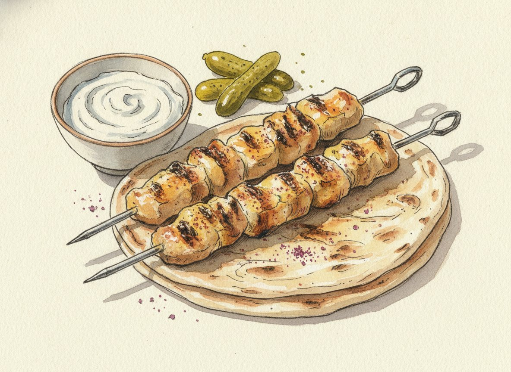
Активно
40 мин
Всего
5 ч (с маринованием) или ночь
Порции
6 (около 18 шпажек)
Духовка
230 °C, режим «верх-низ» или «гриль»
Главное горячее вечера. Кусочки курицы в маринаде из йогурта, лимона, чеснока и томатной пасты, запечённые на шпажках до золотистой корочки. В Ливане его жарят на углях, мы делаем в духовке. Подают с белым чесночным соусом, лепёшкой, солёными огурцами и салатом фаттуш.
История
«Шиш» по-турецки значит «шампур», «тавук» - «курица». Блюдо пришло в Ливан из Османской империи, частью которой Ливан был почти 400 лет, до 1918 года. Ливанцы добавили к турецкому рецепту свой соус тум: густую белую эмульсию из чеснока, лимона и масла, похожую на очень чесночный майонез. Тум настолько острый, что его едят по капле, но без него шиш-таук в Бейруте не подают.
Ингредиенты
куриное филе бедра без кожи (или филе грудки)1,2 кг
лук репчатый (по желанию, для шпажек)1 шт
перец сладкий (по желанию, для шпажек)1 шт
Маринад
йогурт натуральный густой (или греческий)150 г
лимон (нужно 3 ст. л. сока)1 шт
оливковое масло3 ст. л.
чеснок4 зубчика
томатная паста1 ст. л.
паприка сладкая2 ч. л.
душистый перец молотый0,5 ч. л.
корица молотая0,25 ч. л.
соль1,5 ч. л.
чёрный перец молотый0,5 ч. л.
Быстрый чесночный соус
йогурт греческий250 г
майонез3 ст. л.
чеснок3 зубчика
лимонный сок1 ст. л.
соль0,25 ч. л.
К подаче
пита или ливанская лепёшка4 шт
огурцы маринованные200 г
сумах (по желанию)1 ч. л.
Шаги
1. Замариновать · 10 мин + 4-12 ч
Чеснок для маринада натрите на мелкой тёрке. В миске смешайте все ингредиенты маринада. Курицу нарежьте кусками 3-4 см, сложите в маринад и хорошо перемешайте руками в перчатках, чтобы каждый кусочек был покрыт. Накройте плёнкой и уберите в холодильник минимум на 4 часа, а лучше на ночь. Дольше суток не держите.
2. Сделать чесночный соус · 5 мин
Чеснок натрите на мелкой тёрке. Смешайте с йогуртом, майонезом, лимонным соком и солью. Уберите в холодильник минимум на час: чеснок отдаст вкус. Соус можно сделать накануне.
3. Нанизать · 20 мин
Деревянные шпажки замочите в воде на 30 минут, чтобы они не сгорели. Нанизывайте курицу по 4-5 кусочков на шпажку, плотно, но не впритык. Если хотите, чередуйте с кусочками лука и перца. Остатки маринада не выбрасывайте.
Нанизанные шпажки можно до 3 часов держать в холодильнике на противне под плёнкой.
4. Запечь · 18-20 мин
Разогрейте духовку до 230 °C. Противень застелите фольгой. Положите шпажки на решётку над противнем или прямо на фольгу. Запекайте 10 минут, переверните, смажьте остатками маринада и запекайте ещё 8-10 минут, до золотистых, местами подгоревших краёв.
Проверьте самый толстый кусочек: разрежьте его, внутри мясо должно быть белым, без розового цвета, а сок прозрачным.
Практический блок
Подача по-бейрутски. Положите на большое блюдо пару лепёшек, на них шпажки, рядом миску чесночного соуса, маринованные огурцы и посыпьте всё щепоткой сумаха. Гости снимают курицу с шпажки кусочком лепёшки.
Настоящий тум. Если хочется попробовать ливанский соус без майонеза: в чаше измельчителя измельчите 1 головку чеснока (около 10 зубчиков, без ростков) с 1 ч. л. соли. Не выключая, очень тонкой струйкой влейте 1 ст. л. лимонного сока, потом 150 мл масла без запаха, потом ещё 1 ст. л. лимона и ещё 150 мл масла. Нужно 8-10 минут терпения: соус станет белым и густым, как майонез. Если «разошёлся» и стал жидким, начните заново с 1 ст. л. воды и вливайте в неё испорченный соус по ложке.
Замены. - Без молочного. Вместо йогурта в маринаде: ещё 2 ст. л. оливкового масла и 1 ст. л. лимонного сока. Соус - тум без майонеза. - На гриле. Летом на мангале шиш-таук жарят 10-12 минут, часто переворачивая.
Сколько нужно. На столе меззе с горячим 200 г курицы на человека с запасом.
Аллергены. Молочное (йогурт в маринаде и соусе), яйца и горчица (майонез в быстром соусе; в настоящем туме их нет).
Салат к горячему
Фаттуш
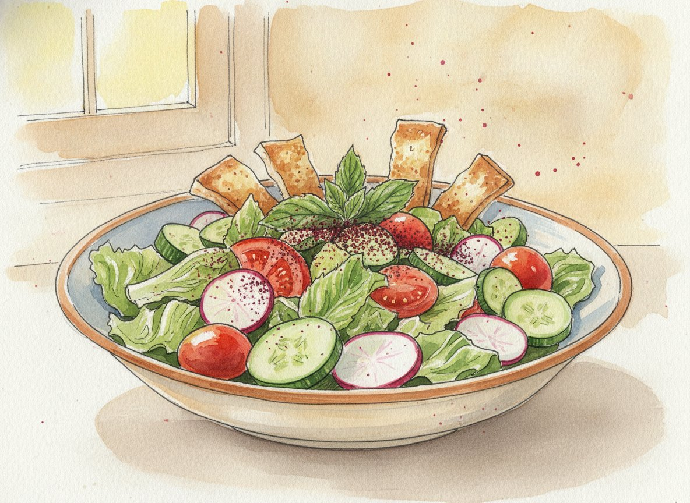
Активно
30 мин
Всего
40 мин
Порции
6 (около 1,2 кг)
Духовка
200 °C (для лепёшек)
Самый простой и самый весёлый салат вечера. Крупно порезанные овощи, хрустящие кусочки подсушенной лепёшки и кисловатая тёмно-красная специя сумах. Его подают к горячему, к курице шиш-таук: свежий и хрустящий, он отлично «освежает» после жареного мяса.
История
Фаттуш - крестьянский салат. Его придумали, чтобы не выбрасывать вчерашний хлеб: черствеющие лепёшки ломали на кусочки и смешивали с тем, что росло в огороде. Само название происходит от арабского «фатт» - «ломать, крошить».
Сумах - это молотые ягоды кустарника, который растёт по всему Средиземноморью. У него кислый, почти лимонный вкус. Говорят, что задолго до того, как в эти края попали лимоны, кислоту в блюда добавляли именно сумахом.
Ингредиенты
пита или ливанская лепёшка (около 150 г)2 шт
салат ромэн (около 300 г)1 кочан
огурцы (около 300 г)2 шт
помидоры (около 350 г)3 шт
редис6-8 шт
перец сладкий (лучше зелёный или жёлтый)1 шт
лук зелёный (перья)3 шт
петрушка0,5 пучка
мята0,5 пучка
оливковое масло (для лепёшек)2 ст. л.
Заправка
лимон (нужно 3 ст. л. сока)1 шт
гранатовый соус (наршараб или «гранатовая меласса»)1 ст. л.
чеснок1 зубчик
сумах (и ещё 1 ч. л. для посыпки)2 ч. л.
оливковое масло Extra Virgin80 мл
соль0,5 ч. л.
Шаги
1. Подсушить лепёшки · 12 мин
Разогрейте духовку до 200 °C. Разрежьте питу на две тонкие половинки (по краю она сама раскрывается, как карман), потом на квадратики 2-3 см. Разложите на противне, сбрызните оливковым маслом, перемешайте руками и подсушивайте 8-10 минут до золотистого цвета. Остудите: остывая, кусочки станут хрустящими, как чипсы.
2. Сделать заправку · 3 мин
В банку с крышкой выжмите лимонный сок, добавьте гранатовый соус, натёртый чеснок, сумах, соль и оливковое масло. Закройте и сильно потрясите 20 секунд: заправка станет густой и однородной.
3. Нарезать овощи · 15 мин
Салат ромэн нарвите или нарежьте полосками 2-3 см. Огурцы разрежьте вдоль на четвертинки и нарежьте кусочками. Помидоры - крупными дольками. Редис - тонкими кружками. Перец - квадратиками. Зелёный лук - колечками, петрушку и мяту - крупно.
Сложите всё в большую миску. Если готовите заранее, накройте плёнкой и уберите в холодильник без заправки и без лепёшек.
4. Собрать перед подачей · 2 мин
Прямо перед тем, как нести салат на стол, полейте его заправкой и перемешайте. Сверху высыпьте хрустящие лепёшки, посыпьте ещё щепоткой сумаха и ещё раз легко перемешайте.
Практический блок
Заранее. Лепёшки можно подсушить утром и хранить в бумажном пакете. Овощи нарезать за 2-3 часа. Заправку сделать накануне, перед подачей встряхнуть.
Где купить сумах и гранатовый соус. Сумах продаётся в отделе специй больших супермаркетов, на рынках у продавцов специй и на маркетплейсах. Гранатовый соус - на полке с соусами (часто это азербайджанский «наршараб» или турецкая «гранатовая меласса»).
Замены. - Нет сумаха. Добавьте в заправку тёртую цедру половины лимона. Цвета не будет, но кислинка останется. - Нет гранатового соуса. Замените 1 ч. л. мёда с ещё 1 ст. л. лимонного сока. - Портулак. Если увидите на рынке портулак (его продают в сезон у кавказских продавцов зелени), добавьте горсть: в Ливане он обязателен в фаттуше.
Аллергены. Глютен (лепёшки). Без лепёшек салат без глютена.
Сладкое
Мухаллабия
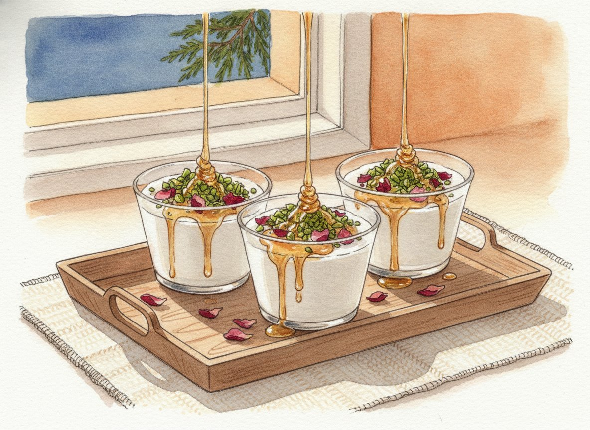
Активно
20 мин
Всего
4 ч 30 мин (с охлаждением) или ночь
Порции
6 стаканчиков по 170-180 мл
Духовка
не используется
Нежный молочный пудинг, который готовится за 15 минут и ждёт гостей в холодильнике. Тонкий цветочный аромат апельсиновой или розовой воды, сверху фисташки и капля мёда. Это не тяжёлый десерт: после обильного меззе он как раз то, что нужно. Пока гости едят мухаллабию, вы варите кофе с кардамоном.
История
По легенде, название идёт от имени арабского полководца аль-Мухаллаба, жившего в VII веке. Персидский повар приготовил для него новый сладкий пудинг, полководцу так понравилось, что он назвал блюдо в свою честь. Правда это или нет, проверить невозможно, но рецепт молочного пудинга с рисовой мукой и розовой водой есть в средневековых арабских кулинарных книгах.
В Ливане мухаллабию часто ароматизируют водой из цветов горького апельсина (её называют «маа захр»), а розовую воду добавляют в другие сладости.
Ингредиенты
молоко 3,2%1 л
крахмал кукурузный (около 3 ст. л. с горкой)70 г
сахар100 г
апельсиновая цветочная вода (или розовая вода)1-2 ст. л.
Для подачи
фисташки очищенные несолёные40 г
мёд жидкий (или сироп)2 ст. л.
лепестки роз пищевые или зёрна граната (по желанию)
Шаги
1. Развести крахмал · 2 мин
В кастрюлю налейте 900 мл молока и добавьте сахар. В оставшихся 100 мл холодного молока размешайте крахмал до полного растворения, без комочков.
2. Сварить · 12 мин
Поставьте кастрюлю на средний огонь и доведите молоко с сахаром почти до кипения: по краям появятся пузырьки. Тонкой струйкой влейте крахмал, всё время помешивая венчиком. Продолжайте мешать, особенно по дну и углам, 6-8 минут, пока масса не станет густой, как жидкий кисель, и венчик не начнёт оставлять след.
Снимите с огня и вмешайте цветочную воду. Начните с 1 ложки, попробуйте и добавьте вторую, если аромат слабый.
3. Разлить и остудить · 4 ч (без вашего участия)
Разлейте горячий пудинг по стаканчикам. Сразу накройте каждый плёнкой прямо по поверхности пудинга, чтобы не образовалась плёнка. Остудите 30 минут на столе, потом уберите в холодильник минимум на 4 часа.
4. Украсить перед подачей · 5 мин
Фисташки крупно порубите ножом. Снимите плёнку, полейте каждый пудинг тонкой струйкой мёда и посыпьте фисташками. Если есть, добавьте пару лепестков роз или зёрен граната.
Практический блок
Заранее. Мухаллабию лучше всего сделать накануне, она хранится в холодильнике 2 дня. Украшайте прямо перед подачей, иначе фисташки размокнут.
Где купить цветочную воду. Розовая и апельсиновая цветочная вода продаются на маркетплейсах, в магазинах восточных продуктов и иногда в больших супермаркетах в отделе для выпечки. Берите пищевую, а не косметическую. Флакона хватит на много десертов.
Замены. - Нет цветочной воды. Добавьте 1 пакетик ванильного сахара и тёртую цедру половины апельсина при варке. Получится уже не ливанский, но очень вкусный пудинг. - Без орехов. Посыпьте кокосовой стружкой или тёртым шоколадом. - Для детей. Вместо мёда и цветочной воды - ложка ягодного варенья сверху.
Если хочется ещё сладкого. Купите к кофе коробку пахлавы или печенья маамуль (с финиками) в магазине восточных сладостей.
Аллергены. Молочное, орехи (фисташки).
Напитки
Напитки
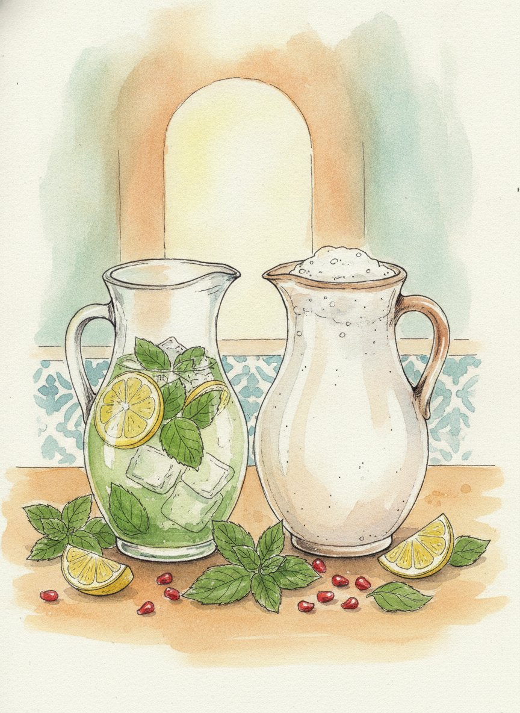
Активно
25 мин
Всего
1 ч 30 мин (с охлаждением сиропа)
Порции
6 (лимонад около 2 л, айран около 1 л)
Духовка
не используется
Ливанский стол не обходится без трёх напитков. Холодный лимонад с мятой, который подают в кувшине со льдом. Айран, солоноватый йогуртовый напиток, который отлично идёт к острому и жареному. И в конце вечера крепкий кофе с кардамоном в маленьких чашках. Все три подходят тем, кто не пьёт алкоголь, а лимонад - и детям. Вино и анисовая водка описаны в разделе «Вино и арак».
История
Кофе. В Ливане кофе варят так же, как в Турции и Греции: в маленьком ковшике, мелкого помола, вместе с сахаром, но почти всегда с кардамоном. Чашку кофе предлагают гостю в первые минуты визита, и отказаться считается невежливым. А когда кофе выпит, гости часто переворачивают чашку на блюдце и «читают» по кофейной гуще: в Ливане это любимое домашнее развлечение, а не серьёзное гадание.
Лимонад. Ливанский лимонад отличается от привычного тем, что в него добавляют немного апельсиновой цветочной воды. Её запах ливанцы узнают так же, как мы - запах мандаринов под Новый год.
Ингредиенты
Лимонад с мятой (около 2 л)
лимон4 шт
сахар150 г
мята свежая (около 30 г)1 пучок
вода холодная питьевая1,5 л
апельсиновая цветочная вода (по желанию)1 ч. л.
лёд
Айран (около 1 л)
йогурт натуральный без добавок (или кефир)500 г
вода холодная (можно газированную)500 мл
соль0,5 ч. л.
сушёная мята (по желанию)1 щепотка
Кофе с кардамоном (6 чашек по 70 мл)
кофе молотый очень мелкого помола (для турки)6 ч. л. с горкой
кардамон в коробочках (или 0,5 ч. л. молотого)6 шт
сахар (по вкусу, можно без)6 ч. л.
вода холодная420 мл
Шаги
1. Лимонад: сироп · 10 мин + 1 ч остывания
Цедру с 2 лимонов срежьте овощечисткой тонкими полосками, без белой горькой части. В кастрюлю положите цедру, сахар и 300 мл воды, доведите до кипения и варите 2 минуты, пока сахар не растворится. Снимите с огня, бросьте в сироп половину мяты и оставьте остывать. Сироп можно сварить накануне и хранить в холодильнике.
2. Лимонад: собрать · 5 мин
Выжмите сок из всех 4 лимонов. Процедите сироп в кувшин, влейте лимонный сок и 1,2 л холодной воды. Добавьте цветочную воду, если она есть. Попробуйте: если кисло, добавьте сахар; если сладко - воды.
Перед гостями положите в кувшин лёд, оставшиеся веточки мяты и кружочки лимона.
3. Айран · 3 мин
Положите йогурт, холодную воду и соль в кувшин или банку и взбейте венчиком, блендером или просто потрясите в закрытой банке, пока не появится пена. Добавьте щепотку сушёной мяты. Подавайте очень холодным, со льдом.
4. Кофе с кардамоном · 10 мин
Коробочки кардамона раздавите ножом плашмя и выньте чёрные зёрнышки, разотрите их в ступке или тяжёлой ложкой. В турку (лучше большую, на 3-4 чашки, или варите в два захода) налейте холодную воду, добавьте сахар и кофе с кардамоном. Размешайте один раз.
Поставьте на самый слабый огонь. Когда кофе начнёт подниматься пенной шапкой, снимите турку с огня, подождите, пока пена осядет, и верните на огонь. Так 2-3 раза. Не давайте закипеть ключом.
Разлейте по маленьким чашкам, ложечкой разложите пенку в каждую. Подождите минуту, пока гуща осядет на дно, и только потом пейте.
Практический блок
Подача. Лимонад и айран - в кувшинах прямо на столе меззе, со льдом. Кофе - в самом конце, вместе с мухаллабией.
Чай. Если гости не пьют кофе, заварите чёрный чай с веточкой свежей мяты прямо в чайнике, как в Ливане: подают в маленьких стеклянных стаканчиках, сладким.
Замены. - Апельсиновая вода есть не у всех. Без неё лимонад всё равно хорош. - Айран. Подойдёт и магазинный айран или тан: их продают почти в каждом супермаркете.
Аллергены. Молочное (айран). Лимонад и кофе без аллергенов.
Вино и арак
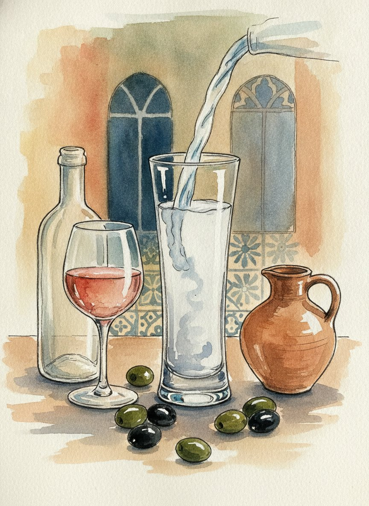
Ливан - одна из самых древних винных стран мира. Финикийцы, которые жили на этом берегу три тысячи лет назад, возили вино по всему Средиземному морю. А главный напиток ливанского застолья - не вино, а арак: анисовая водка, которая белеет, когда в неё наливают воду.
Честно о главной сложности: ливанское вино в России есть, но найти его непросто. В ноябре 2026 года в российской рознице продавались вина двух ливанских виноделен: Domaine des Tourelles и Château Ksara. Обычно они бывают в крупных винных сетях и интернет-магазинах, а в супермаркете у дома их скорее всего не будет. Цены ниже указаны как ориентир на ноябрь 2026 года. К каждому вину есть замена, которая продаётся везде: грузинское или армянское вино подойдёт к меззе ничуть не хуже.
Белое или розовое - к меззе
Почему подходит. На столе меззе много лимона, чеснока, зелени и кунжута. Нужно свежее сухое вино с яркой кислотностью: оно «смывает» тахини и масло и не спорит с лимоном. Тяжёлое дубовое белое или сладкое вино здесь не подойдут.
Что искать из Ливана. - Domaine des Tourelles, White, Vallée de la Bekaa - около 2 700 ₽. Белое сухое из долины Бекаа, в купаже вионье и мускат александрийский. Мускат даёт цветочный аромат, который перекликается с мятой и апельсиновой водой в лимонаде. Урожай 2023 или 2022 года: белое пьют молодым.
Domaine des Tourelles - одна из старейших виноделен Ливана, её основали в 1868 году в городе Штора в долине Бекаа.
Чем заменить. - Грузинское сухое белое из сортов мцване или ркацители (Кахетия), обычное «европейское», а не янтарное квеври. - Армянское сухое белое из сорта воскеат. - Любое сухое розовое, например российское или грузинское.
Красное - к шиш-тауку
Почему подходит. Курица в маринаде с паприкой и чесноком хорошо идёт с красным средней насыщенности, сочным и не слишком танинным. Ливанские красные часто делают из сортов сенсо, каберне и кариньян, они тёплые, с пряными нотами.
Что искать из Ливана. - Domaine des Tourelles, Cinsault Vieilles Vignes, Vallée de la Bekaa - около 4 700 ₽. Красное сухое из сорта сенсо со старых лоз («vieilles vignes» по-французски значит «старые лозы»). Сенсо даёт лёгкое, сочное вино с мягкими танинами, это лучшая пара к курице из всех трёх. - Château Ksara, «Château» (например, урожая 2019 года) - около 3 000 ₽. Красное сухое из каберне совиньон, мерло и пти вердо от самой старой винодельни Ливана. Оно плотнее и серьёзнее, чем сенсо: выбирайте его, если гости любят насыщенные красные.
Если попадутся другие ливанские вина (Château Musar, Kefraya, Ixsir), они тоже подойдут.
Чем заменить. - Армянское красное из сорта арени. Арени растёт в горах, у вина мягкие танины и вишнёвый вкус. По характеру это самая близкая замена. - Грузинское сухое саперави, но лучше простое, без долгой выдержки в бочке.
Арак, узо или ракы - к меззе
Что это. Крепкий (обычно около 50%) прозрачный напиток из винограда с анисом. Анисовые семена перегоняют вместе с виноградным спиртом, поэтому арак пахнет анисом, как лакричные конфеты. В Ливане его называют национальным напитком и пьют весь вечер, медленно, маленькими глотками, закусывая меззе.
Как подавать. Арак никогда не пьют чистым. В узкий стакан наливают 1 часть арака, потом 2 части холодной воды, и только потом лёд. Прямо на глазах прозрачный напиток становится молочно-белым. Это всегда производит впечатление на гостей.
Что купить. Ливанского арака в российских магазинах, похоже, нет. Возьмите его ближайших родственников: греческое узо или турецкую ракы. Это тоже анисовые напитки, они продаются в обычных винных магазинах и ведут себя точно так же: белеют от воды. Подавайте так же, 1 к 2. Гостям можно честно сказать: «В Ливане это был бы арак, а у нас его греческий брат».
Если кто-то привёз ливанский арак из поездки (например, Ksarak от Château Ksara), это будет главное украшение вечера.
Без алкоголя
Лимонад с мятой и айран - рецепты в разделе «Напитки».
Гранатовый сок пополам с газированной водой, в бокале для вина. По цвету похож на красное вино.
«Белый кофе». В Ливане так называют совсем не кофе, а кипяток с ложкой апельсиновой цветочной воды. Его пьют после ужина для пищеварения. Попробуйте предложить гостям, это всегда вызывает удивление.
Сколько покупать на 6 гостей
Белое (Domaine des Tourelles White или замена) - 2 бутылки: к меззе.
Красное (сенсо от Domaine des Tourelles, Ksara «Château» или замена) - 1-2 бутылки: к шиш-тауку.
Узо или ракы - 1 бутылка 0,5 л (по желанию): с водой одной бутылки хватит на весь вечер.
Гранатовый сок - 1 л, газированная вода - 1 л.
Это ориентир из расчёта примерно 1 бутылка вина на 2-3 гостей за вечер.
Игры вечера
Три простые игры и два ливанских развлечения. Они идут по ходу вечера: «Угадай специю», пока гости собираются, слова и викторина между горячим и сладким, кофейная гуща и танец в конце. Если вечер получается разговорным, оставьте одну-две любые.
Ведущий вечера, скорее всего, вы. Очки считать не обязательно, но если хочется соревнования, разделите гостей на две команды и записывайте счёт на листе бумаги.
1. «Угадай специю» (за меззе, 15 минут)
Ливанская кухня держится на нескольких запахах. Эта игра знакомит с ними гостей ещё до того, как они попробуют блюда.
Что нужно. 8 одинаковых маленьких баночек или пиал, лучше непрозрачных, с номерами на дне или на крышке (наклейки есть в PDF). Карточка с ответами (тоже в PDF) лежит у ведущего лицом вниз.
Что положить в баночки (по 1 ч. л.):
№
Специя
Где она в нашем меню
1
Зира (кумин)
фалафель, хумус
2
Корица
маринад для шиш-таука
3
Кардамон
кофе
4
Сумах
фаттуш, посыпка для хумуса
5
Заатар
манакиш
6
Душистый перец
табуле, шиш-таук
7
Сушёная мята
айран
8
Апельсиновая цветочная вода (несколько капель на ватном диске)
лимонад, мухаллабия
Как играть. 1. Баночки идут по кругу. Каждый гость нюхает (можно с закрытыми глазами) и пишет на бумажке номер и свою догадку. 2. Когда все баночки прошли круг, ведущий открывает ответы и рассказывает, в каком блюде эта специя. Кто угадал больше всех, тот получает первую порцию шиш-таука.
2. «Арабское слово или нет?» (после горячего, 15 минут)
В русском языке много слов, которые пришли из арабского, часто через турецкий, итальянский или французский. Некоторые очень неожиданные.
Что нужно. 16 карточек из PDF. На лицевой стороне слово, на обороте ответ.
Как играть. Ведущий показывает слово, гости спорят и голосуют: арабское или нет? Потом ведущий переворачивает карточку и читает, откуда слово. Можно играть командами.
Слово
Арабское?
Откуда
Магазин
Да
От арабского «махазин», «склады». Пришло к нам через французский.
Алгебра
Да
От «аль-джабр», «восполнение»: так называлась книга математика аль-Хорезми в IX веке.
Помидор
Нет
Итальянское «pomo d’oro», «золотое яблоко».
Цифра
Да
От «сифр», «пустой, ноль». Сначала так называли только ноль.
Алкоголь
Да
От «аль-кухль»: так арабы называли тонкий порошок, а потом алхимики - любую «очищенную суть».
Шоколад
Нет
Из языка ацтеков, через испанский.
Сироп
Да
От «шараб», «напиток».
Адмирал
Да
От «амир», «повелитель». «Амир аль-бахр» - «повелитель моря».
Апельсин
Нет
Голландское «appelsien», «китайское яблоко».
Халва
Да
От «хальва», «сладость».
Кофе
Да
От «кахва». К нам пришло через турецкий и голландский.
Тюльпан
Нет
От турецкого слова, которое значило «тюрбан»: цветок похож на чалму.
Жираф
Да
От «зарафа». Пришло через итальянский и французский.
Матрас
Да
От «матрах», «то, что брошено на пол»: так называли подстилку для сна.
Йогурт
Нет
Турецкое слово.
Азимут
Да
От «ас-сумут», «направления». Арабские астрономы дали Европе много таких слов, например «зенит».
3. «Правда или миф?» (после горячего, 10-15 минут)
Что нужно. Только этот лист. Ведущий читает утверждение, гости по очереди или командами говорят «правда» или «миф». Потом ведущий читает ответ.
На флаге Ливана нарисован кедр.Правда. Ливанский кедр - символ страны. Кедровая роща в горах, «Кедры Господни», с 1998 года под охраной ЮНЕСКО.
Буквы, которыми мы пишем, идут от финикийцев, живших на месте Ливана.Правда. Финикийский алфавит из 22 букв переняли греки, от греков пошли и латиница, и кириллица. Одна из самых старых финикийских надписей найдена в ливанском городе Библ.
Слово «Библия» связано с ливанским городом.Правда. Греки называли город Библ «Библос». Через него в Грецию везли папирус, и «библос» стало значить «папирус, книга».
Настоящий табуле - это салат из булгура с небольшим количеством зелени.Миф. Наоборот: в Ливане в табуле зелени гораздо больше, чем крупы. Много булгура кладут в «европейском» варианте.
Киану Ривз родился в Бейруте.Правда. В 1964 году. Его семья прожила в Ливане недолго.
Ливанцев за границей больше, чем в самом Ливане.Правда. По разным оценкам, людей ливанского происхождения в мире в несколько раз больше, чем жителей страны. Больше всего их в Бразилии.
Арак белеет от воды, потому что портится.Миф. Анисовое масло растворяется в спирте, но не в воде. Когда наливают воду, оно выпадает мельчайшими капельками, и напиток становится белым. Арак при этом в полном порядке.
Вино в Ливане начали делать только при французах, в XX веке.Миф. Финикийцы торговали вином ещё три тысячи лет назад. А самую старую из нынешних виноделен, Château Ksara, основали монахи-иезуиты в 1857 году.
4. Гадание на кофейной гуще (за кофе)
Это не серьёзное гадание, а домашняя игра, которую в Ливане устраивают после кофе почти в каждой семье.
Допейте кофе так, чтобы на дне осталась только гуща.
Накройте чашку блюдцем, загадайте вопрос и переверните чашку вместе с блюдцем «от себя». Подождите 3-5 минут, пока гуща стечёт и подсохнет.
Поднимите чашку и передайте её соседу. Он рассматривает узоры на стенках и «читает» вашу судьбу: птица - хорошие новости, дорога - путешествие, кольцо - свадьба, рыба - деньги. Чем смешнее толкование, тем лучше.
5. Дабке (в конце вечера, по желанию)
Дабке - народный танец Леванта, его танцуют на всех свадьбах и праздниках. Танцоры встают в линию или полукруг, держатся за руки или за плечи и вместе топают в ритм. Ведущий в начале линии машет платком и задаёт шаг.
Самый простой шаг. Все держатся за руки. Шаг правой ногой вправо, левая перекрещивается сзади, снова шаг правой вправо, потом лёгкий подскок и топ левой ногой. Повторять, двигаясь по кругу. Через пару минут получается у всех.
Музыку для дабке найдите в любом музыкальном сервисе по запросу «dabke» или «дабке».
Шпаргалка ведущего
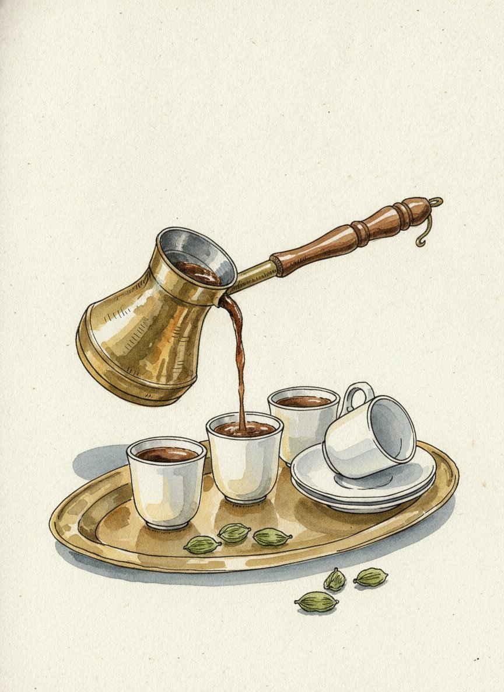
Семь коротких историй для рассказа за столом. Их удобно рассказывать по ходу вечера, когда на столе появляется нужное блюдо или подходит время. Читать с листа не обязательно: перескажите своими словами.
1. Алфавит из Библа (в начале вечера)
Буквы, которыми мы пишем, родом отсюда. Около трёх тысяч лет назад на месте нынешнего Ливана жили финикийцы, мореходы и торговцы. Им нужна была простая запись для торговых сделок, и они придумали алфавит из 22 знаков: не тысячи иероглифов, а буквы для звуков. Одна из самых старых финикийских надписей высечена на каменном гробу царя Ахирама в городе Библ. От финикийцев алфавит переняли греки, от греков - римляне и славяне. Так что каждая буква в меню на вашем столе - дальняя родственница ливанской.
2. Город, который дал имя книге (к первому тосту)
Библ, или по-арабски Джбейль, - один из самых старых городов мира: люди живут там непрерывно около семи тысяч лет. Через его порт в Грецию везли египетский папирус, и греки стали называть папирус по имени города - «библос». От этого слова произошли «библиотека» и «Библия», то есть просто «книги». Можно поднять первый тост за книги и за тех, кто их пишет.
3. Кедры на флаге (к табуле или салатам)
В древности горы Ливана были покрыты кедровыми лесами. Из ливанского кедра финикийцы строили корабли, египтяне - гробницы фараонов, а в Библии рассказывается, что из него строили Иерусалимский храм царя Соломона. За тысячи лет почти все леса вырубили. Самая известная из уцелевших рощ называется «Кедры Господни», говорят, что некоторым деревьям в ней больше тысячи лет. С 1998 года она под охраной ЮНЕСКО. А кедр стал символом страны: он нарисован прямо в центре ливанского флага.
4. Хумусная война (к хумусу)
В 2008-2010 годах соседи по региону всерьёз соревновались, чья тарелка хумуса больше. Рекорды переходили из рук в руки, пока в мае 2010 года около 300 ливанских поваров не приготовили под Бейрутом 10 452 кг хумуса, больше десяти тонн. Тарелку внесли в Книгу рекордов Гиннесса. Самое забавное: площадь Ливана - тоже 10 452 квадратных километра. Нарочно так вышло или случайно, пусть гости решат сами.
5. Пещеры, которые нашли монахи (к вину или араку)
В 1857 году монахи-иезуиты в долине Бекаа посадили виноград и начали делать вино. Так появилась винодельня Château Ksara, сейчас самая старая и самая большая в Ливане. В 1898 году монахи нашли рядом с ней старинные подземные пещеры, вырытые ещё во времена римлян. Сейчас эти пещеры тянутся на два километра, и в них хранят вино. А меньше чем в часе езды от Ксары, в Баальбеке, стоят руины римских храмов, одних из самых больших в Римской империи.
6. Ливанцы по всему миру (к горячему)
Ливанцев за пределами Ливана в несколько раз больше, чем в самой стране. Больше всего в Бразилии: по оценкам, людей ливанского происхождения там больше, чем жителей всего Ливана. Многие известные люди - ливанцы по рождению или по семье. Киану Ривз родился в Бейруте в 1964 году. Поэт и художник Джебран Халиль Джебран родился в ливанской горной деревне Бшарри, а его книга «Пророк», написанная в Америке в 1923 году, переведена на десятки языков. Можно спросить гостей: а у кого из них родственники разъехались по миру и где они сейчас?
7. Чашка кофе (к кофе и сладкому)
В ливанском доме кофе гостю наливают в первые минуты, а отказаться невежливо. Его варят в маленьком ковшике с кардамоном, наливают в чашки размером с напёрсток и пьют медленно, маленькими глотками. А когда кофе допит, чашку переворачивают на блюдце и «читают» по гуще будущее. Это не всерьёз: просто повод ещё полчаса посидеть вместе. Расскажите об этом, а потом предложите гостям погадать друг другу (как это сделать, написано в разделе «Игры»).
Вопросы гостям, чтобы разговорить стол
Кто из вас пробовал ливанскую или ближневосточную кухню впервые и где?
Какой запах напоминает вам о самой лучшей поездке?
Какое блюдо из детства вы бы хотели, чтобы готовили в каждом доме, как хумус в Ливане?
В какую страну вы бы поехали завтра, если бы не нужно было думать о билетах и визах?
Атмосфера вечера
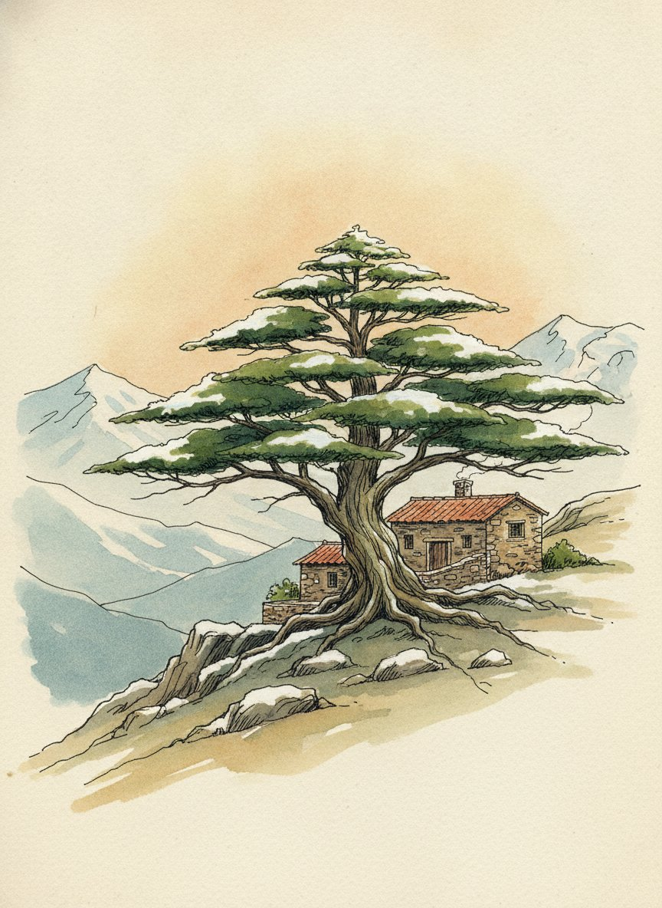
Ливанский вечер узнают по свету, запаху и звуку. Тёплые огоньки, зелень и лимоны на столе, запах кофе с кардамоном и песни Фейруз. Почти ничего не нужно покупать специально: главное украшение - сама еда, расставленная по всему столу.
Приглашения
За неделю разошлите гостям приглашения. Шаблон открытки с ливанским кедром и надписью по-арабски «Ахлан ва сахлан» («Добро пожаловать») есть в PDF.
Бумажное. Распечатайте на плотной бумаге и подпишите от руки на обороте.
Онлайн. Сфотографируйте открытку и пришлите в мессенджер.
В приглашении напишите дату, время, адрес и дресс-код. Хорошо добавить строчку: «Приходите голодными, будет меззе».
Дресс-код
Не обязательно, но весело. Предложите гостям «летний Бейрут»: - светлое и лёгкое: лён, белый, песочный, оливковый; - что-нибудь золотое: браслеты, серьги, пуговицы; - тёмные очки на макушке и лёгкий шарф; - для мужчин светлая рубашка с закатанными рукавами.
Попросите обойтись без «костюмов шейха» и восточных маскарадных нарядов: Ливан - очень европейская по духу страна, и бейрутцы одеваются так же, как жители Марселя или Афин.
Стол
Тесно и щедро. Главное правило меззе: все тарелки ставятся в центр стола сразу, близко друг к другу. Не бойтесь, что будет тесно, так и должно быть.
Посуда. Широкие плоские тарелки для хумуса и баба гануша, глубокие миски для салатов, маленькие пиалы для маслин, соусов и солёных огурцов. Подойдёт любая керамика, лучше белая, голубая или терракотовая.
Лепёшки. Сложите питу стопкой прямо на скатерть или в корзинку под салфеткой. Тарелки для гостей маленькие, закусочные.
Зелень и фрукты. Положите на стол целые лимоны, пучки мяты в стакане с водой, гранат, разрезанный пополам, миску маслин и огурцы с редисом целиком.
Скатерть. Белая льняная или простая однотонная. Под меззе хорошо смотрится и деревянный стол без скатерти.
Карточки. Меню и именные карточки есть в PDF.
Свет
Ливанский вечер проходит на террасе под открытым небом. Дома создайте похожее ощущение тёплым светом: - выключите верхний свет; - развесьте гирлянду с тёплыми лампочками или поставьте на стол несколько фонариков со свечами; - если есть марокканские или турецкие фонари с цветным стеклом, сейчас их время.
Запах
Перед приходом гостей сварите одну турку кофе с кардамоном, даже если пить его будете позже. Через пять минут вся квартира пахнет как бейрутское кафе.
Музыка
Найдите песни по названию в любом музыкальном сервисе и соберите плейлист заранее. Пока гости собираются, музыку можно сделать погромче, за столом потише.
Встреча гостей: Фейруз
Фейруз - главная певица Ливана, её называют «голосом Ливана» и «ливанским кедром». Её песни звучат по утрам в каждом кафе и такси Бейрута.
Fairuz, «Li Beirut» («Бейруту»). Песня о любимом городе на музыку «Аранхуэсского концерта» испанского композитора Хоакина Родриго.
Fairuz, «Kifak Inta» («Как ты?»), музыка её сына Зияда Рахбани.
Fairuz, «Nassam Alayna El Hawa» («Подул на нас ветер»).
За столом: спокойная ливанская музыка
Marcel Khalife, «Ummi» («Мама») - песня ливанского композитора и исполнителя на уде на стихи палестинского поэта Махмуда Дарвиша.
Ibrahim Maalouf - французский трубач ливанского происхождения. Поищите его альбом «Diagnostic» и композицию «Beirut».
Wadih El Safi - «голос ливанских гор», знаменитый исполнитель народных песен. Подойдёт любой сборник.
Танцы и дабке
Nancy Ajram - ливанская поп-звезда, «Ah W Noss» и другие хиты.
Любой плейлист по запросу «Lebanese dabke» для танца в конце вечера.
План вечера в одном списке
За неделю: разослать приглашения.
Накануне: распечатать карточки, подготовить баночки для «Угадай специю».
За час до гостей: накрыть стол, разложить лимоны и мяту, включить гирлянду и плейлист, сварить турку кофе «для запаха».
Гости пришли: меззе, лимонад, «Угадай специю».
За столом: фалафель и манакиш, истории из шпаргалки, узо или ракы.
После горячего: «Арабское слово или нет?» и «Правда или миф?».
За кофе: гадание на кофейной гуще, дабке и вопрос всем: «В какую страну вы бы хотели поехать, если бы можно было завтра?»
Аллергены
● - есть в блюде. ○ - только в одном из вариантов или по желанию.
Блюдо
Глютен
Кунжут
Молочное
Орехи
Яйца и горчица
Нут (бобовые)
Хумус
● (тахини)
●
Баба гануш
● (тахини)
○ (если йогурт вместо тахини)
Табуле
● (булгур)
Фаттуш
● (лепёшки)
Фалафель с соусом тахини
○ (если добавить муку)
●
●
Манакиш с заатаром
●
● (в заатаре)
Манакиш с сыром
●
○ (если посыпать кунжутом)
●
Шиш-таук
● (йогурт)
Чесночный соус
● (йогурт)
● (майонез)
Мухаллабия
●
● (фисташки)
Лимонад, кофе
Айран
●
Лепёшки пита
●
○ (смотрите состав)
Кунжут - главный аллерген этого стола. Он есть в тахини (хумус, баба гануш, соус к фалафелю) и в заатаре. Если у кого-то из гостей аллергия на кунжут, сделайте для него отдельную тарелку: табуле, фаттуш, шиш-таук, манакиш с сыром без кунжута и мухаллабию. Тарелки с тахини ставьте подальше от его места и не используйте одну ложку для разных блюд.
Без глютена. Хумус, баба гануш, фалафель (без муки), шиш-таук, мухаллабия, а табуле можно сделать с киноа вместо булгура. Лепёшки замените овощными палочками и листьями салата.
Готовые продукты. В покупном тесте, лепёшках, заатаре и пахлаве могут быть следы орехов, кунжута, молока и яиц. Смотрите состав на упаковке.
Алкоголь. Есть только в вине и араке. Все блюда без алкоголя.